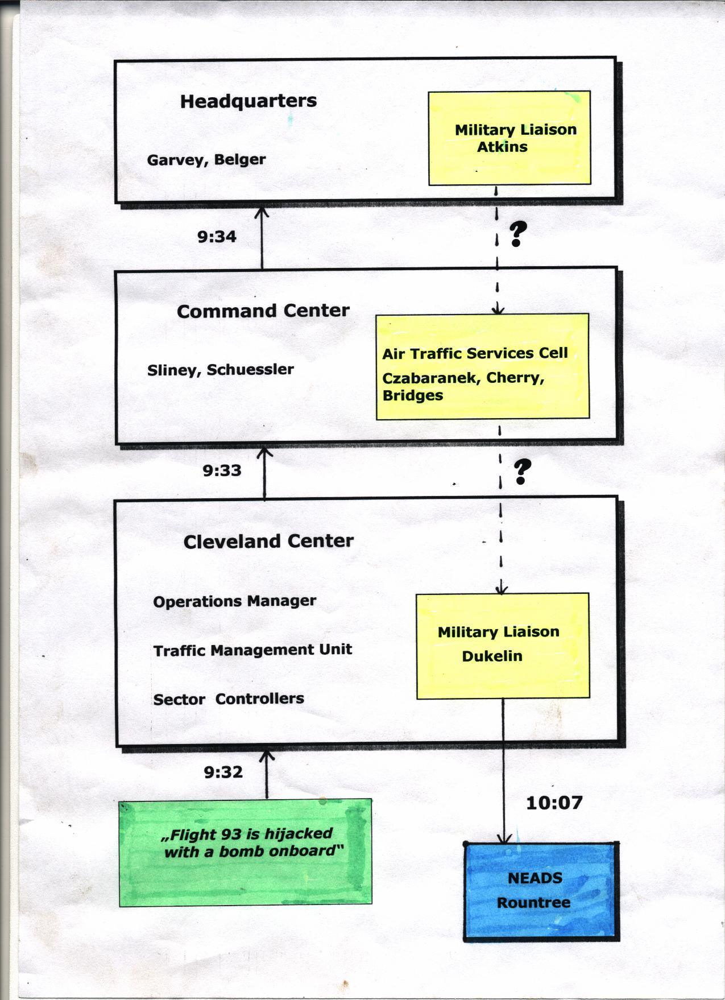

Was Flight 93 part of a military hijack exercise?
Tuesday, November 16, 2010
FAA delayed alerting of NEADS on the hijacking of Flight 93

Since 2002, when Jared Israel was the first one to point out the lame reaction of the US air defense to the hijackings (not being able to intercept leastwise one of the airliners), there's still no satisfying answer to the question for those who were responsible for the fatal delays.The 9/11 Commission basically argues that the existing protocol for the collaboration between the FAA and NORAD in the case of a hijacking was "unsuited in every respect" because it was designed for "traditional hijackings" rather than suicide terrorists using hijacked planes as missiles. The Commission Report describes meticulously how the information "Flight X is hijacked" was ought to be processed from the basic FAA controller who spots the plane, upward the FAA hierarchy to the "hijack coordinator" who contacts the NMCC (National Military Command Center), and - after seeking approval from the Secretary of Defense - down the NORAD chain of command.There is an entire section on this subject ("Interagency collaboration", p. 17/18), which is copied word by word from the Commission's Staff Statement No. 17, a working paper from June 2004, with one remarkable exception. The sentence "Most FAA centers had a civilian employee to coordinate with NORAD, for situations like training exercises", which is written down in the statement, didn't manage it into the final report.It should have, however. On 9/11, these civilian employees, also known as "military liaisons", were in direct contact to the NEADS air defenders. So the regional FAA Centers were by all means able to shortcut the intricate protocol by simply telling their own military liaison to call up NEADS. And this is exactly what happened:Flight..................................................11.........175.........77.........93Controller realizes flight is hijacked.......8:25.......8:55.......----........9:32
Notification of NEADS.........................8:37.......9:03.......----.......10:07Delay in minutes..................................12...........8..........----.........35While 8 or 12 minutes look to be a reasonable time for controllers to figure out the situation, discuss various options and get clearance from higher-ranking FAA managers, the outstanding 35 minutes delay for Flight 93 requires a closer look at Cleveland Center, the facility responsible for Flight 93. (Flight 77 is a special case because it was not believed to be hijacked, but missed; it completely vanished from the radar scopes of FAA controllers.)The "Flight 93 is a hijack with a bomb on board" information needed only two minutes from the basic controller to FAA headquarters:
At 9:32, a third radio transmission came over the frequency: "Keep remaining sitting. We have a bomb on board." The controller understood, but chose to respond: "Calling Cleveland Center, you're unreadable. Say again, slowly." He notified his supervisor, who passed the notice up the chain of command. By 9:34, word of the hijacking had reached FAA headquarters. (911 CR, p. 28)
However: NEADS first received a call about United 93 from the military liaison at Cleveland Center at 10:07. We know his name from transcripts of NEADS radio messages: that was Mr. Dukelin - first name unknown. Dukelin was in direct contact to Stacia Rountree from NEADS, he spoke with her at 9:45 and again at 10:00. At both occasions, he alerted her to Delta 1989 - but not one single word on United 93.
Did Dukelin not know about the hijacking of Flight 93? This can be precluded. He was certainly in contact with the Traffic Management Unit and Ed Wolbers, the operations manager:
They are speaking to the pilot, Dukelin talks to Ed and tells him he is talking to HUNTRESS. Ed says D1989 is not being hijacked, he is landing as a precaution in Cleveland.
So Dukelin, like the Cleveland Center management, was certainly aware of the Flight 93 problem. Maybe he was eagerly waiting for an order from above to inform NEADS:
Cleveland even told the Command Center [at 9:36] it was prepared to contact a nearby military base to make the request. The Command Center told Cleveland that FAA personnel well above them in the chain of command had to make the decision to seek military assistance and were working on the issue. (911 CR, p. 28/29)
But the upper FAA management shied away from requesting the help of NEADS:
At 9:49, 13 minutes after Cleveland Center had asked about getting military help, the Command Center suggested that someone at headquarters should decide whether to request military assistance:
FAA Headquarters: They're pulling Jeff away to go talk about United 93.
Command Center: Uh, do we want to think, uh, about scrambling aircraft?
FAA Headquarters: Oh, God, I don't know.
Command Center: Uh, that's a decision somebody's gonna have to make probably in the next ten minutes.
FAA Headquarters: Uh, ya know everybody just left the room.
(911 CR, p. 29)
Everybody left the room. The Headquarters and the Command Center were tracking Flight 93 as it turned around and headed toward Washington. They got the information that it was hijacked and had a bomb on board. They knew that two airliners had already been used as guided missiles - yet nobody of the leading FAA personnel bothered to follow Cleveland Center's suggestion and tell NEADS (via Dukelin) to scramble fighters.
What was going on there?Additionally, at 9:45 the FAA issued the general grounding order for all aircraft. Who ordered it? The official story has it that it was Ben Sliney, director of the Command Center, but there are also reports that it was Monte Belger, deputy director of the Headquarters - not to forget that Norman Mineta claims the glory for himself. No matter who was it - why did this hero make the risky, unprecedented, precautionary decision to "get all the birds down", but failed to make the acute, urgent, if well-rehearsed and operationally easy decision to alert NEADS about a hijacked airliner on his way to Washington with a bomb on board?There seems to be only one realistic recourse: Flight 93 was part of a military exercise, probably a hijack simulation, and the exercise plot included a delayed alerting of NEADS. The behavior of Belger, Sliney & co. indicates that they didn't view the plane as a threat, but were told (possibly from the Secret Service who - according to Mike Ruppert - had direct access to FAA data) that it was a "special", i.e. a military exercise flight. The purpose of the delayed alert might have been to test NEADS - to make it more difficult for them to intercept the flight in time.
To substantiate this thesis, I take a look at the function of the so-called military liaisons. I've already mentioned that the 9/11 Commission describes their job as "to coordinate with NORAD, for situations like training exercises". An analysis paper from 2001, examining the structure of Air Traffic Control, confirms that the military liaisons dealt with exercises. Moreover it looks that the exercises were the only job of the liaisons.
Military Coordinator: coordinates paper work and flight data for all military exercises within Boston Center airspace.
This certainly applies to the other FAA Centers as well. Also FAA directive 7610.4K ("Special Military Operations") shows up the central role of the military liaisons for the exercises:
FAA Military Liaison Officers’ Responsibilities
1−6−1. ACTIONS
Liaison officers shall take the following actions in connection with proposed military exercises:
a. Encourage mission planning officers to include assigned airspace requirements in the information disseminated with the request for exercise approval.
b. Recommend the use of planning conferences to mission planning officers for the resolution of problems when it is evident that the exercise requirements will generate sufficient traffic to create untenable air traffic or airspace user situations.c. Provide early notification and information to the affected ARTCCs and CARF on any exercises which are classified under subparagraph b.
So by dropping the "military liaisons" from the final report, the Commission avoided questions about their function. Their function was to coordinate military exercises with civilian air traffic. It was not to assist the FAA in the case of a hijacking. Interestingly, there is an interview with the military liaison of Boston Center, Colin Scoggins (as his alias "Cheap Shot"):
As the military specialist I am responsible for all military procedures between Boston Center and the military units in my airspace, and any visiting military units that participate in any of our Special Use Airspace (SUA).
http://sites.google.com/site/911guide/cs
Q: What can you tell about the military exercises of that day, and if they had any effect whatsoever on the response?
Cheap Shot: I never knew anything about them. Vigilant Guardian is an exercise that we don’t participate at Boston Center. We normally are involved in Fertile Spades, Fertile Angels, and Amalgam Virgo’s. Occasionally we will get involved in large-scale exercises such as a while back Amalgam Warrior, and Global Yankee.
http://sites.google.com/site/911guide/cs3"Cheap Shot" denies any knowledge of or involvement in the ongoing exercises. This comes as a big surprise, because NORAD was conducting several large-scale exercises, Vigilant Guardian being only one of them. Other exercises, not mentioned by Scoggins, were Global Guardian, Northern Guardian, or Vigilant Warrior. NORAD covers the entire airspace of Boston Center. When Boston Center called NEADS, the air defenders thought it was the begin of Vigilant Guardian. Scoggins' "I never knew" claim would imply that NORAD conducted its exercises in Boston Center airspace without any coordination with civilian air traffic control - bypassing Scoggins, the scheduled coordinator.This is hard to believe and entails the search for an alternative explanation. Here is one: Scoggins was involved in the exercises, but to admit this fact would have opened the doors for more gnawing questions. Many suspect Scoggins of being a gatekeeper, and the job of a gatekeeper is to absorb dangerous questions. This is exactly what he's doing.A military liaison was not only assigned to the FAA field facilities, but to the Command Center and the Headquarters, too. There is little information available for the latter. The military liaison at the Command Center was the "Air Traffic Services Cell", consisting of Col. John Czabaranek, Lt. Col. Michael-Anne Cherry and Maj. Kevin Bridges. Mike Williams of 911myths.com speculates that the job of the "cell" on 9/11 was to help with the communication infrastructure (teleconferences etc.):
From this description the cell officers earliest task appears to have been to set up the various teleconferences. They were assisting with communications in general, and there's nothing here to say the officers would take it upon themselves to monitor FAA information and pass it on to NORAD, especially if they believed (like Sliney) NORAD had already been informed. It wasn't their job, and they had other things to do.
Other sources suggest, however, that the task of the Air Traffic Services Cell was to coordinate civilian with military aircraft movement, like their counterparts at the field facilities:
Military Air Traffic Services Cell
–Housed within the System Command Center
–Mission -To coordinate all priority military aircraft movement and airspace issues during times of tension, warfare, natural disasters or civil unrest.
–Warfare Support
–Deployment of forces
–Sensitive, specialized, or classified mission coordination
–Military training exercise support
–Natural or environmental disaster assistance
–Civil exercise collaboration involving military participation
On 9/11, there was no tension, warfare, natural disaster or civil unrest, leaving the "military training exercise support" as the residual task of the "cell". This is confirmed by an article of Aviation Week & Space Technology from December 2001, describing the job of the cell as "refresher training", i.e. conducting exercises:
In a fluke, so was what Herndon calls "the military cell"--the Air Traffic Services Cell, created by the FAA and the Defense Dept. for use when needed to coordinate priority aircraft movement during warfare or emergencies. The Pentagon staffs it only three days per month for refresher training, but Sept. 11 happened to be one of those days.
It is unclear if the Air Traffic Services Cell was in direct contact to the military liaisons at the FAA field facilities, but there is reason to assume that. The cell was able to communicate with other military facilities via SIPRNET, the military's Internet:
The ATSC’s response to the terrorist attacks benefits from the fact that, six weeks earlier, the cell had a secure terminal to access the SIPRNET—the military’s classified version of the Internet—installed, along with other hardware, which significantly enhances the movement of vital information. According to Meenan, because the cell has the SIPRNET terminal, “we could immediately look at NORAD and [Defense Department] plans as they evolved; filter, package, and format them, then walk out to the [FAA] national operations manager—who had control of the entire national airspace system—and give him current visibility into… fighter, tanker, and support aircraft activities. It cut down our response time tremendously.”
http://web.archive.org/web/20020913090602/http://www.aviationnow.com/content/publication/awst/20020610/aw52.htmThe last sentence - "it cut down our response time tremendously" - deserves only scorn and derision, considering the 35-minute delay of alerting NEADS to Flight 93. Instead, SIPRNET seems to have been the central tool to conduct the various exercises. Moreover, it was a valuable tool for "interested circles" to make the exercises a springboard for performing the 9/11 crimes.
{kind=link}